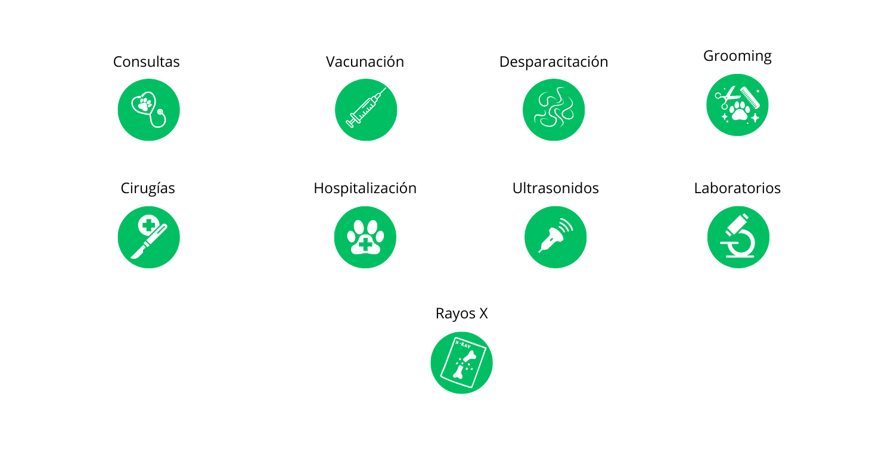

Nuestros Servicios
Los mejores servicios veterinarios para tu mascota

Es un chequeo de rutina para determinar si el estado de salud de tu mascota es óptimo o bien presenta síntomas de enfermedad que deben ser tratados.

- Corte de uñas
- Limpieza de Oídos
- Drenaje de glándulas anales
- Fragancia especial

Planes para cachorros y adultos
Es una enfermedad contagiosa con un 90% de mortalidad. Afecta a los caninos no vacunados de todas las edades.